FOURTH DAY
Четверг
Программа:
1. Суставная разминка
Наклоны и повороты головы, вращение плечами, локтями и запястьями, наклоны корпуса в стороны и вперёд, вращение тазом, вынос бедра в сторону, вращение коленями и стопами. Выполняйте по 10 вращений (наклонов) в каждую сторону. На всю разминку уйдёт не больше 5 минут.
2. Разогрев
-
прыжки Jumping Jacks — 30 секунд
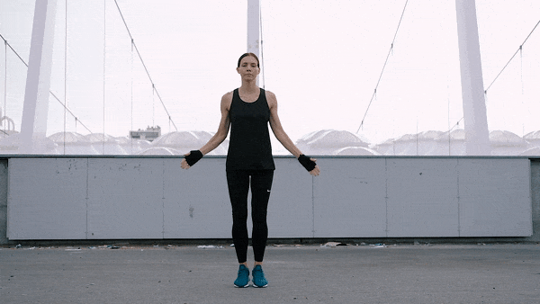 -
бег на месте — 30 секунд
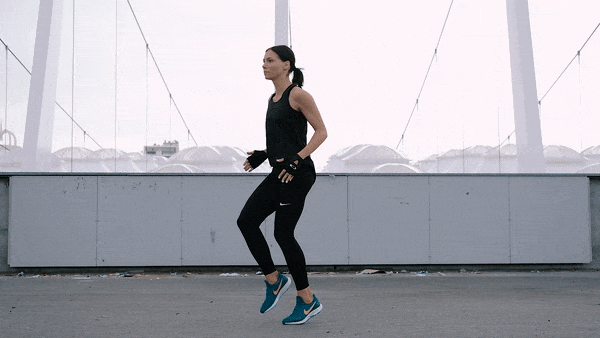 -
прыжки через скакалку — 100 раз
(если нету возможности, то пропускаем)
3. Силовая тренировка
-
обратные отжимания — три подхода по 10 раз
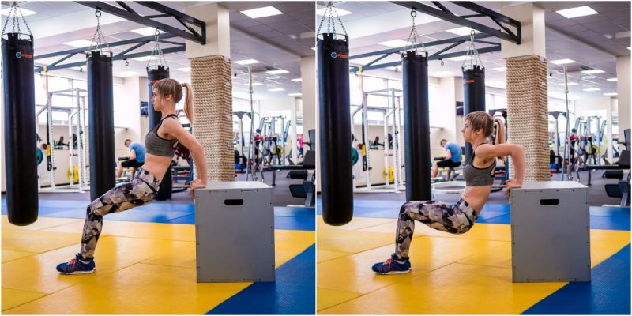 -
выпады — три подхода по 10 раз на каждую ногу
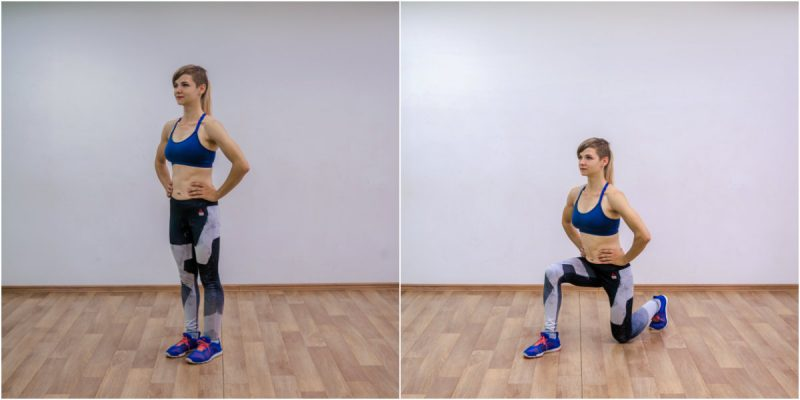 -
махи гантелями стоя — три подхода по 10 раз
(если нету гантелей, найти чем можно их заменить, например рюкзаком с книгами или маленькой сумкой, таким образом делать сначала на одну руку а потом другю)
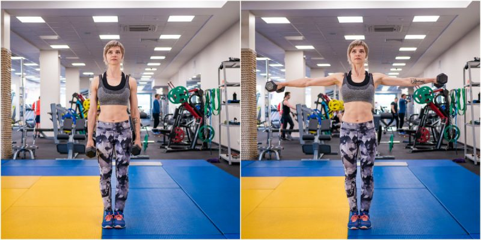
-
подъём таза с опорой на лавку — три подхода по 10 раз
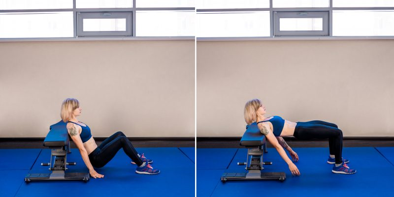 -
подъём ног на пресс — три подхода по 20 раз
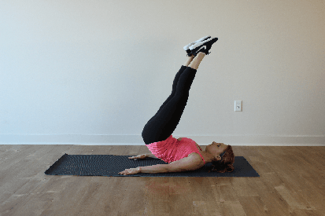 -
лодочка — три подхода по 10 раз
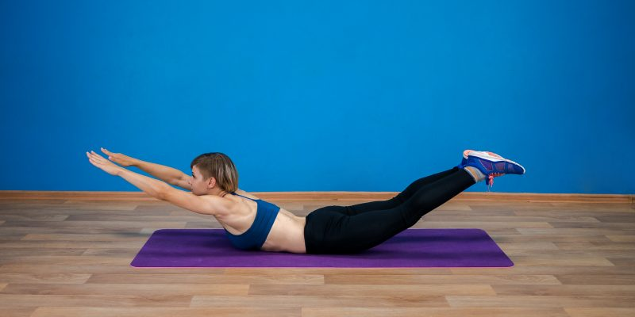 -
планка классическая → планка боковая в правую сторону → планка классическая → планка боковая в левую сторону — каждую держать по 30 секунд
(на фотографии ниже показаны два положения: слева — обычная планка, справа — боковая планка)
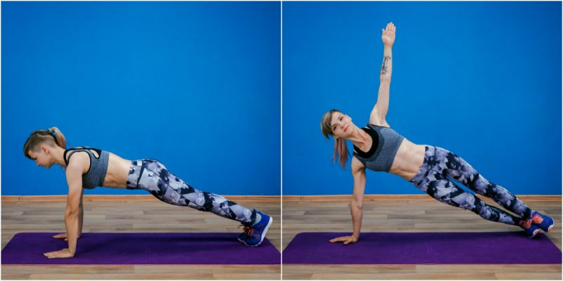
4. Растяжка
-
Растяжка грудных мышц
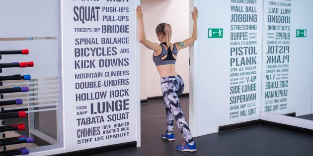 -
Растяжка передней части бедра
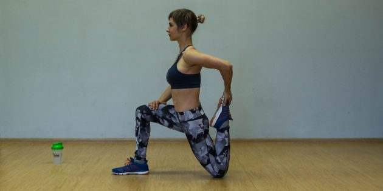 -
Растяжка ягодичных мышц
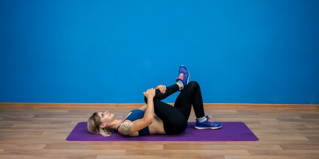 -
Растяжка бицепса бедра
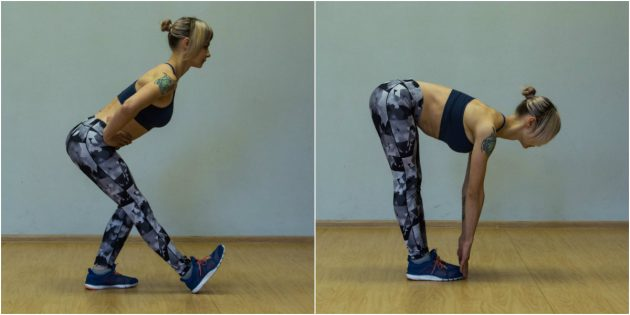 -
Растяжка в позе прямого угла
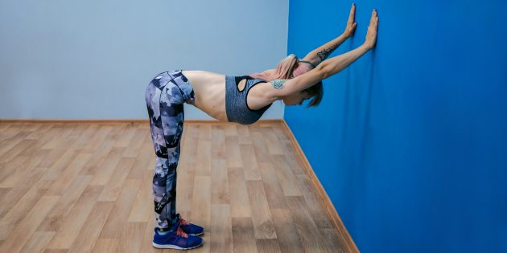 -
Бабочка
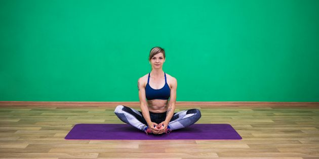